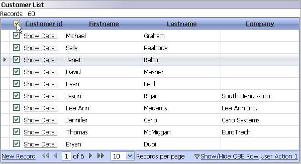

Checkbox select column
Property name: 'Has checkbox select column' ('grid Properties' pane)
Selecting this option adds a column with a checkbox for each row to select one of more records, with a select / deselect all option. This feature is meant to be used in conjunction with custom Ajax callbacks (described elsewhere in this document).
|  |
|
Checkbox select column with all selected |